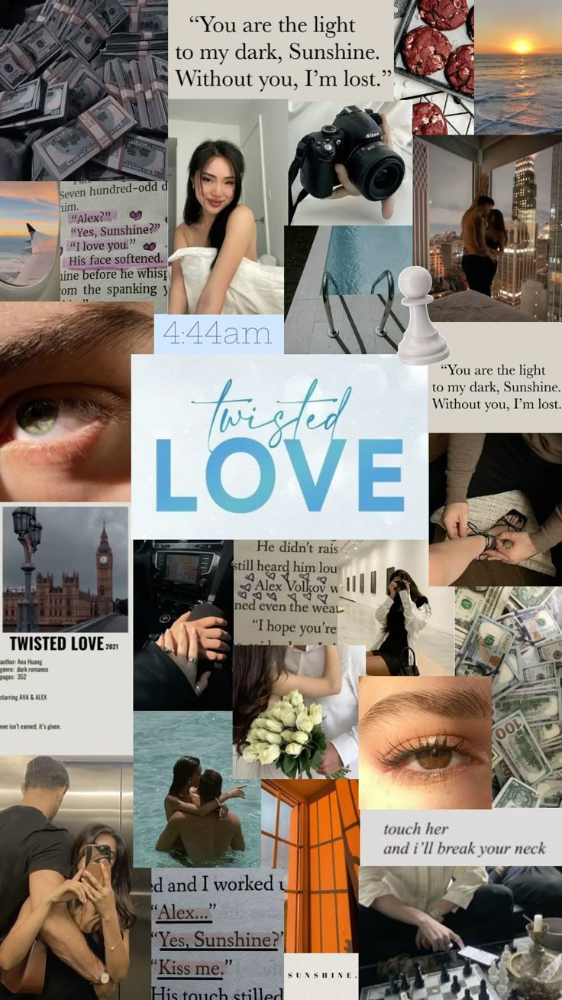
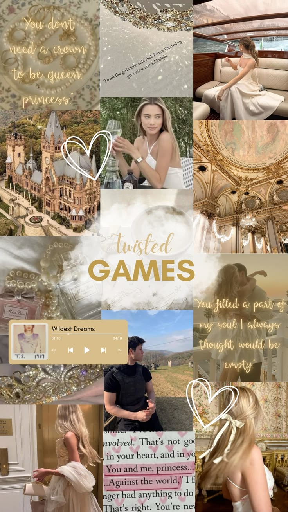
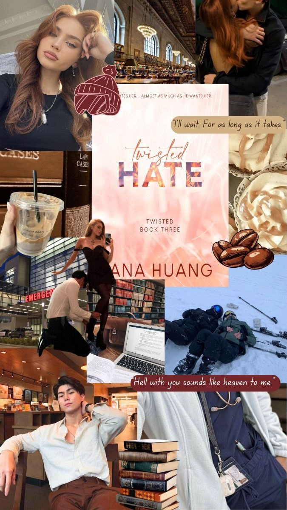
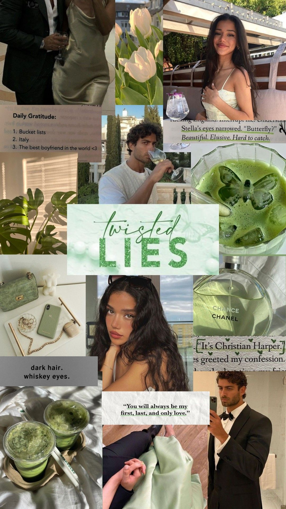

Ava & Alex
Ava is a college student who has had a crush on her brother's best friend for a long time. Alex is a cold, guarded, powerful man who keeps everyone at a distance. When Ava needs protection, he steps in, and their forced closeness starts to crack his tough exterior.
Tropes: grumpy/sunshine, brother's best friend, protective hero

Bridget & Rhys
Bridget is a princess who is tired of living by royal rules. Rhys is the bodyguard assigned to keep her safe. The two know a relationship is off limits, but the more time they spend together, the harder it gets to ignore their feelings.
Tropes: forbidden romance, bodyguard, royalty

Jules & Josh
Jules and Josh can't stand each other, and their arguments are legendary. But after an unexpected plan forces them to spend more time together, the line between hate and attraction gets blurry fast.
Tropes: enemies to lovers, banter, forced proximity

Stella & Christian
Stella and Christian's story is full of secrets, tension, and complications that put their feelings to the test. This book ties together the series and the friend group's storylines.
Tropes: secrets, slow burn (edit this to match your favorite parts)